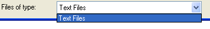
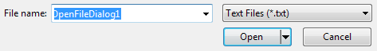

The Open File Dialogue Box Filter Property
This tutorial follows on from the previous section
In the previous section, we saw how to add an Open File Dialogue to our menus. We then saw how to add an Initial Directory and a Title property. In this section, we'll learn about the Filter property.
The Filter Property
In most dialogue boxes, you can display a list of specific files that can be opened. These are displayed in the "Files of Type" drop down list. To do this in VB.NET, you access the Filter property. We'll restrict our users to only opening Text files, those that end in the extension ".txt".
The following code shows how to use the filter property:
openFD.InitialDirectory = "C:\"
openFD.Title = "Open a Text File"
openFD.Filter = "Text Files|*.txt"
openFD.ShowDialog()
Run your code. Click File > Open on your menu, and then click the arrow on the drop down box for "Files of Type". You should see this:

Or this, in laster versions of the Windows operating system:

You can add a little bit extra to the description part of the filter, if you like. This will server a s a reminder of just what the extension is. Try amending the line to this:
openFD.Filter = "Text Files(*.txt)|*.txt"
When you run your code, you see this in the Files of Type area (XP only. Vista and Windows 7 already have the extra information.)::
If you scroll across your Open dialogue box, you should see only text files displayed (you'll still see folders). If you can't see any files at all, double click a folder and explore. You'll soon see something like this:
To display files of more than one type, add a Pipe character between each filter. In the code below, two file types are specified, text files and Microsoft Word documents:
openFD.Filter = "Text Files|*.txt|Word Files|*.doc"
When the programme is run, you should be able to see two file types in the list:
In the next section, we'll see how to return which file was selected by the user.